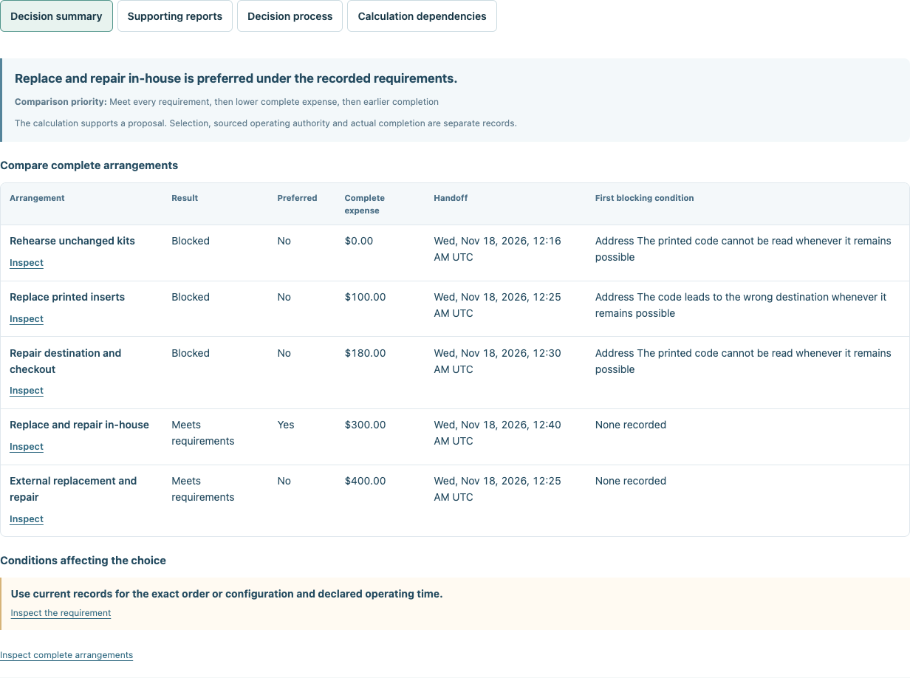
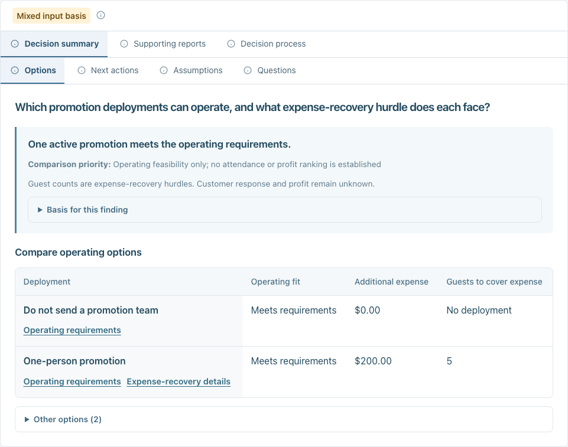

Maya must protect a shipment deadline without paying for unnecessary rush freight. Alex must decide whether to send someone out to promote the venue without leaving its floor short of staff. A cheap shipment can become unavailable; an affordable promotion can leave too few people inside. A reassuring recommendation that hides either condition can make the decision worse.
Before acting, each needs to know what the report has established, what supports that finding and what remains unresolved. Those requirements follow from the business decision. They also give us a way to judge a report produced by a spreadsheet, an analyst or an application.
Begin with the judgment the reader needs
A freight price leaves open whether capacity is sufficient, the booking remains available, permissions cover the current order and arrival meets the promise. A promotion budget leaves open who goes, who stays, when outreach happens and whether the crew returns in time.
For these operating decisions, the report needs complete alternatives: connected choices and supporting conditions that can be assessed together. We call one such complete combination an arrangement. A price or a named person alone is insufficient to establish that the operation can work.
A finding that an arrangement is blocked must expose the relevant mandatory condition and its input basis. That lets the responsible person investigate a meaningful change. It does not guarantee that the report can invent a workable repair.
Three contributions should remain distinguishable:
| Level | What it contributes |
|---|---|
| Assessment pattern | Defines the recurring question, evaluation and meaning of the finding. |
| Decision view | Organizes those findings around the reader’s concern, with a route to their supporting detail. |
| Domain application | Supplies the concrete alternatives, records, requirements, priorities and terminology. |
The commitment assessment pattern explains what establishes a supported operating option. Other patterns assess possible interpretations or investigations and responses. The report must preserve the particular meaning of its finding; a common heading cannot make those findings interchangeable.
Ask six questions of the report
A useful report connects its answer to the basis and limits needed to act on it. This reading key is an explanatory illustration, independent of any particular screen.

| Question | An observable standard |
|---|---|
| What has been established? | State the bounded conclusion and whether its calculation is current and sufficiently evaluated. |
| Which alternatives fit? | Identify what a complete candidate includes and which mandatory conditions it meets or fails. |
| Why prefer one? | Identify the applicable comparison policy and sufficient comparison coverage, including genuine ties or an unresolved preference. |
| What qualifies the finding? | Distinguish a failed requirement from missing information, incomplete evaluation and an assumption that remains conditional. |
| What supports it? | Trace a consequential check to its records, revision, time window and declared assumptions. |
| What happens next? | Identify the supported response and any separate choice, authorization or execution still required. |
A fully checked passing candidate can establish a feasible option even while the wider comparison remains unfinished. Establishing that none fits, or that one is preferred, needs the relevant coverage or another sound proof. The report should let a reader see that difference.
Test the conclusion with a changed context
Change one relevant input and ask what the report should retain or withdraw. These are separate verified worked cases, each with its own fixed basis:
| Controlled comparison | What changes in the finding | What it does not establish |
|---|---|---|
| Promotion: five available staff become four; four are still required inside. | Holding or sending one becomes holding only. A $200 expense that fits the budget cannot supply the missing person. | The feasible deployment with five staff is not a forecast of additional guests. |
| Shipment: the review moves from 8 a.m. to 11:30 a.m.; the cost-first policy stays fixed. | Direct’s booking window has closed for a new reservation. The $5,000 Consolidated proposal replaces $4,000 Direct as the supported preference. | A passed cutoff does not cancel a reservation already secured. |
| Restaurant: the same feasible repairs are compared under stability or payroll priority. | The declared preference changes from bringing in Rowan to coordinating three assignment changes. | A policy change does not alter mandatory availability or prove that staff agreed to the changes. |
Follow Alex’s promotion review to see why the staffing change prevents outreach. Follow Maya’s booking-window decision to see when the premium becomes justified. Compare Elena’s roster priorities to see the same possibilities support different preferences.
Keep uncertainty, preference and action separate
An unavailable answer differs from established infeasibility. Missing inputs, an incomplete evaluation or a stale calculation can prevent a conclusion. Sufficient evaluation establishing that no declared candidate meets the requirements supports a different response: reconsider the constraints, candidates or commitment. An empty display cannot silently mean that nothing works.
Feasibility and preference answer different questions. A passing arrangement supplies a supported option. An applicable comparison policy and sufficient comparison coverage may establish a preference, including a genuine tie. The report should preserve preferred ties and make an absent ranking explicit. Which Feasible Option Should We Prefer? develops this distinction through the restaurant and promotion cases.
A financial hurdle differs from a forecast. Alex’s $200 promotion at $40 retained contribution per genuinely additional guest requires five to cover its expense and six to exceed it, assuming no additional discount loss. Those numbers leave customer response unknown. A supported operating option and a precise threshold can coexist with an unresolved profit judgment.
When a further check could change the response, ask whether its possible results can be used before the commitment deadline and whether the complete investigation improves on acting now. What Is a Question Worth? demonstrates that comparison. How Much Uncertainty Is Left? explains why describing uncertainty is a separate question from deciding what to do about it.
Work backward from your own decision
Before designing a report, write down the decision, its owner and its useful response window. Describe one complete candidate; separate mandatory conditions from priorities; identify the source scope and changed facts that could reverse the conclusion. Then ask a reader to explain a blocked alternative, a preferred alternative and an unresolved answer using the report alone.
Different operational decisions can share assessment structures when the mapping preserves what the alternatives represent, what the checks establish and what the conclusions permit. A shipment permission and an employee’s availability have different meanings even when both constrain an operating arrangement. From Arrangements to Assessments explains that foundation.
These Hermod-authored examples demonstrate reuse across applications. They provide limited evidence of generality. A further test is an independently described decision: record which parts map, which need new modeling and where the pattern does not apply. Independently feasible shipments may compete for one truck; an attendance forecast needs support beyond a guest hurdle.
See the reasoning in the application
Decision Lab presents Decision summary → Options for the finding and comparison. Next actions, Assumptions and Questions keep their different questions separate, with Supporting reports for the basis and Decision process for the linked questions and responses. Calculate or Recalculate evaluates the supplied inputs. Applying changed inputs requires a current calculation before the earlier answer can support the new case.
The paired native summaries below illustrate the reading standard. Both use cost first, then earlier completion, among options meeting their recorded requirements. The domains have separate records, time origins and requirements; the shared presentation makes their reasoning inspectable.
Maya · Shipment readiness
Direct is preferred at $4,000, arriving Friday noon. Consolidated also meets the requirements at $5,000, arriving Thursday evening. Backup exceeds the $5,000 spending boundary.

Follow Maya’s shipment decision, including the later cutoff that makes Consolidated the supported proposal.
Leah · Gift-kit readiness
Complete in-house correction is preferred at $300, finishing in 40 minutes. The $400 external package takes 25 minutes. Both fit the one-day window; partial corrections leave a supported fault unresolved.


Follow Leah’s gift-kit decision, including the urgent campaign where the faster package protects the cutoff.
Leah’s case makes the changed-context lesson concrete in another domain: read the complete gift-kit story to see why a full day supports in-house correction and a 30-minute window can justify external work. The cutoff changes eligibility; the cost-first policy stays fixed.
A similar view can carry a different claim
Alex’s native Options view keeps operating eligibility and the guest hurdle together without presenting a profit ranking. Supported choices appear first; Other options reveals the blocked alternatives. With five staff available and four required inside, holding or sending one meets the recorded requirements.


Alex can inspect the conditional financial hurdle, seek evidence about response or hold the team. Read the promotion case to see why an operating finding leaves that management judgment open.
Follow the finding to an available response
The Decision process graph connects a finding to the responses it supports. In the separate registration-and-verification shipment walkthrough, the selected question asks whether any complete arrangement meets the requirements. Its current answer supports comparing feasible options. A finding that none fit would instead support revising the commitment or arrangements.

Selecting a question or action reveals its basis and linked inputs or supporting results. The graph helps someone ask what would change the next response. Inspecting it does not perform an action, book freight or grant permission to spend.
Choosing a supported arrangement still leaves an operational handoff: who will act, what authority applies and which record will establish completion? A proposed reservation, a confirmed reservation and a completed delivery are separate claims. What Does Choosing an Arrangement Commit Us To? follows that handoff; What Changes When One Fact Changes? explains why supporting changes reopen it.
See the complete shipment process
The full graph connects registration evidence, complete arrangements and the verification question through labeled arrows. Highlighted paths apply to its recorded case; other paths remain visible, and dashed paths return for reassessment.

Maya can justify when the freight premium protects her deadline. Alex can explain why an operating option remains a conditional business bet. The report earns its place when each can identify the supported conclusion, its limits and the next responsible action.